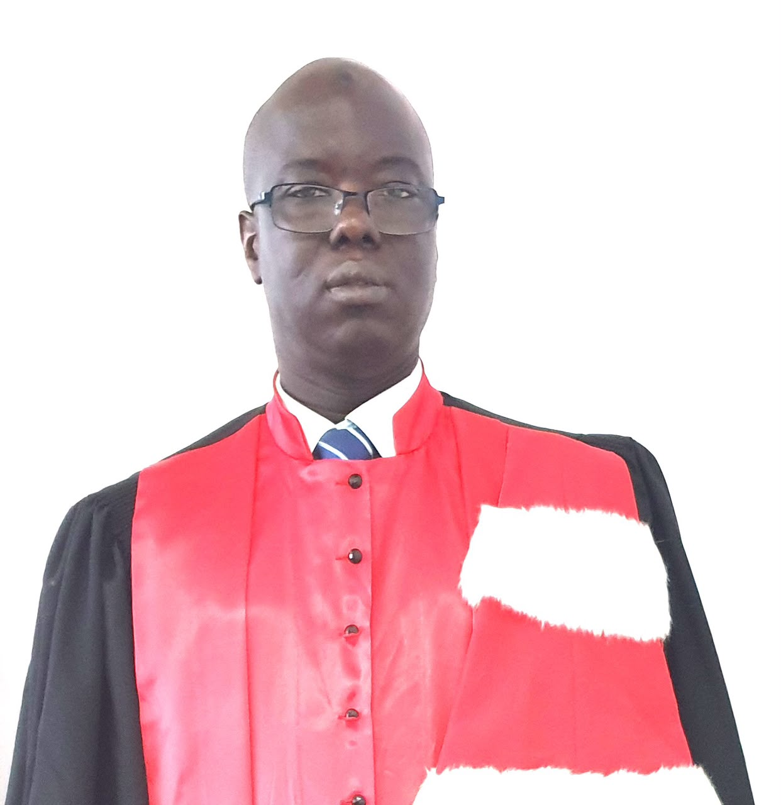
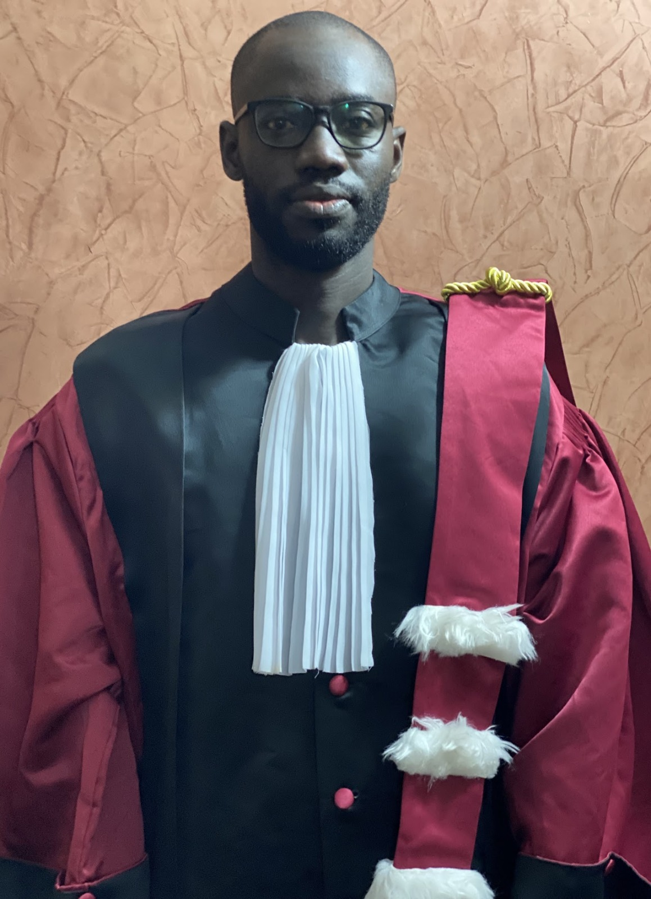
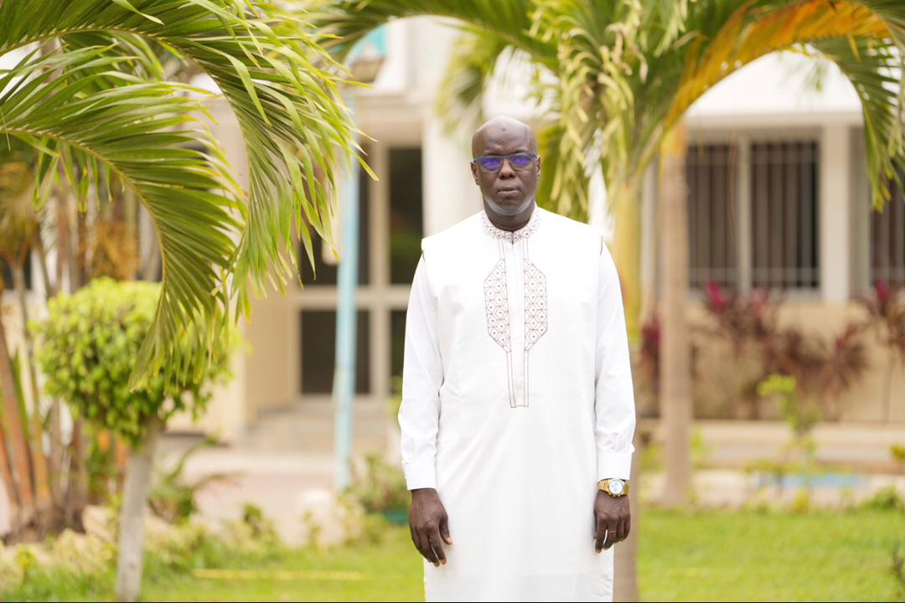
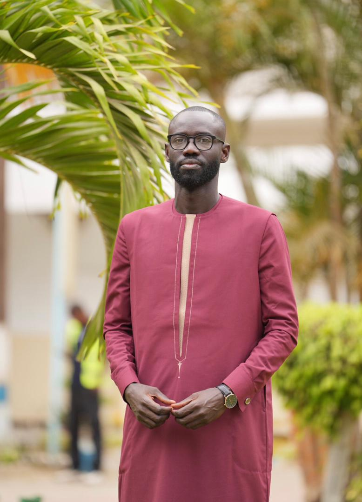
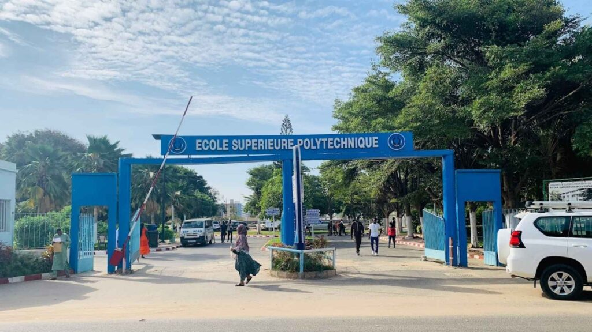

Candidats Directeur & Directeur des Études
École Supérieure Polytechnique — UCAD
Ensemble vers une nouvelle dynamique de performances


Le programme complet de Pr Mady CISSE et Pr Ibrahima FALL pour l'École Supérieure Polytechnique — Juillet 2026.
Retour en images sur les moments forts et l'engagement de Pr Mady CISSE et Pr Ibrahima FALL pour l'École Supérieure Polytechnique.



Une présentation détaillée des engagements, de la vision et du programme de transformation que portent Pr Mady CISSE et Pr Ibrahima FALL pour l'ESP.
Pr Mady CISSE et Pr Ibrahima FALL dressent un bilan honnête de l'École Supérieure Polytechnique — ses forces et atouts académiques reconnus, mais aussi les défis structurels à relever pour maintenir son excellence régionale.
Le binôme présente sa vision centrale : transformer l'ESP en un pôle d'excellence mondialement reconnu, en combinant rigueur académique, innovation technologique et ouverture sur le monde professionnel et international.
De la gouvernance transparente à la digitalisation des processus, en passant par le renforcement de la recherche et des partenariats — chaque axe est présenté avec des objectifs clairs et mesurables sur 3 ans.
Des projets concrets avec des délais définis : campus numérique, incubateur de startups étudiantes, réseau des alumni actif, centre de documentation modernisé et hub d'insertion professionnelle.
Un message fort aux étudiants, enseignants et personnels : leur candidature est un engagement collectif, une promesse de dialogue continu et de prise de décision inclusive sur toute la durée du mandat 2026–2029.
« L'ESP mérite une direction à la hauteur de son histoire et de ses ambitions. »
« Chaque étudiant, chaque enseignant aura voix au chapitre dans les décisions qui façonnent notre école. »